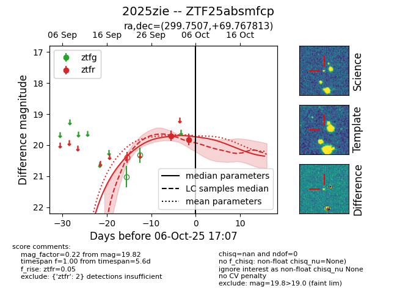
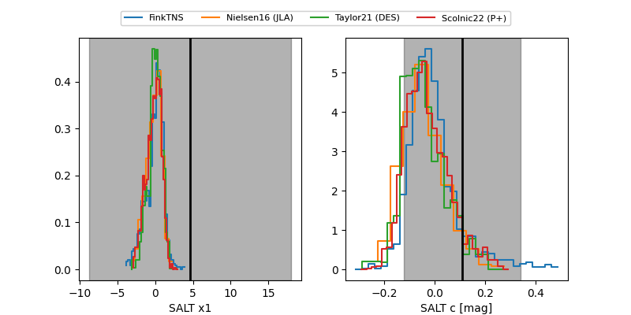

FINK: ZTF25absmfcp
Lasair: ZTF25absmfcp
ALeRCE: ZTF25absmfcp
TNS: 2025zie
YSE: 2025zie
ZTF25absmfcp (ztf,fink)
2025zie (tns,yse)
equatorial (ra, dec) = (299.7507,+69.76781)
galactic (l, b) = (102.3433,+19.78076)


last ztfr=19.82
2 ztfr detections